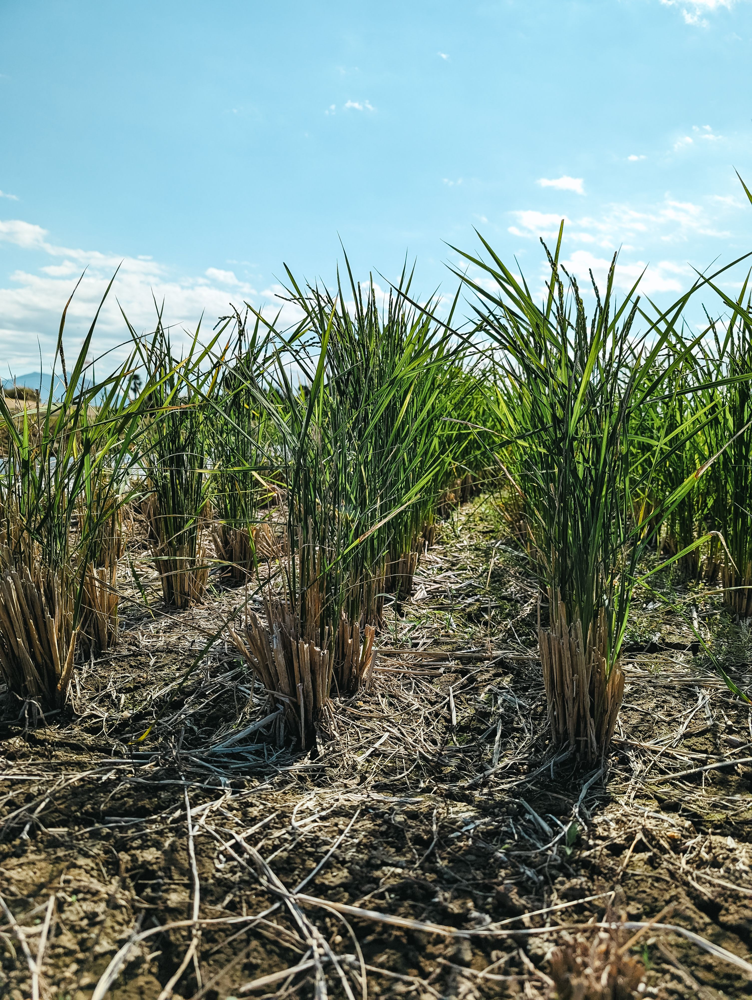
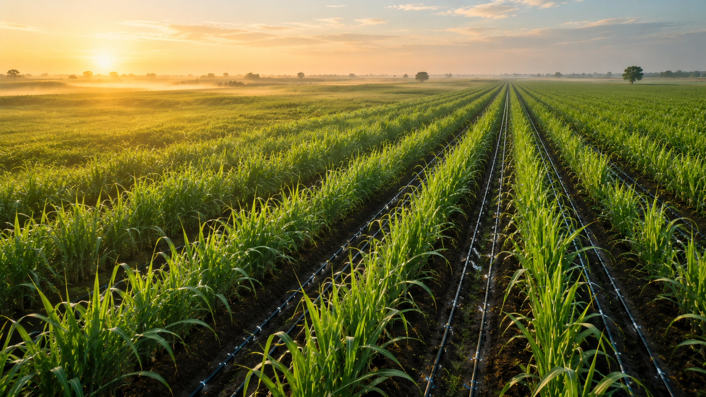
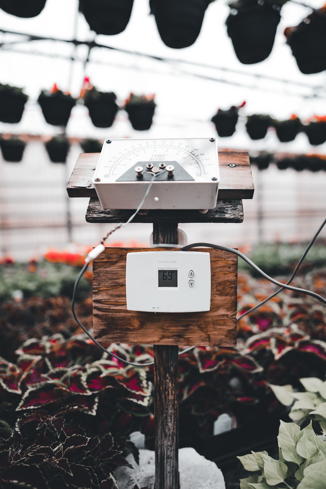
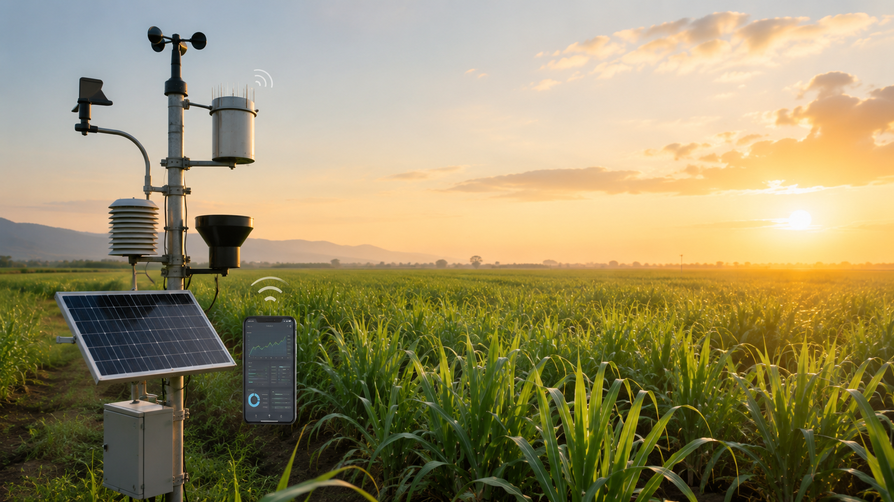

My Farm Gallery:

Fig 1. Healthy sugarcane crop grown using proper irrigation and nutrient management.

Fig 2. Drip Irrigation Used in sugarcane

Fig 3.Soil Moisture Sensor used in sugarcane

Fig 4. Weather Monitoring System